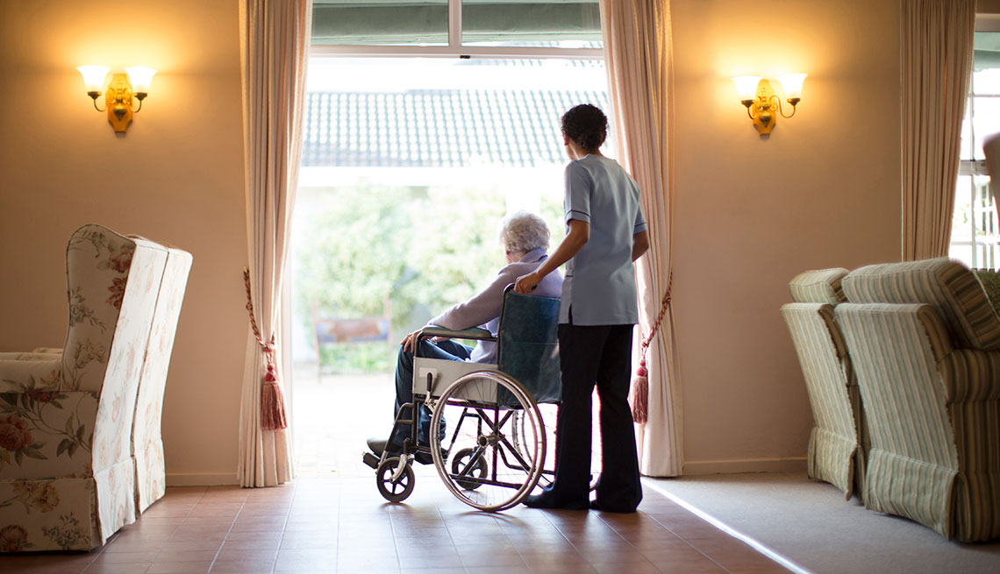

The Leaders Healthcare Service
Welcome to The Leaders Healthcare Services.
The Leaders Healthcare services is a high quality provider of provider of person centred social care services for people with mental health issues, dementia, individuals recovering from substance/alcohol misuse and other complex needs.
We are the number one recruitment care agency based in Bicester. We are a fast growing Healthcare recruitment specialist in Mental Health and General Nurses, Carers and Support work Agency staff to residential homes, nursing home and hospitals. We are registered to provide care assistant staff who are highly trained to meet the needs of the service user within care homes. All Healthcare assistants have been trained and provided with care certificate ensuring that they have met the needs of Care Quality Commission. We are located in the heart of Bicester and ideally situated within a walking distance from the well known leading business park, Bicester Village in Oxfordshire. The Leaders Healthcare Services office is accessible by road, train and bus.
We assist clients with personal care, housework, shopping, respite, medication and mental health illness. All staff are highly trained and have undergone rigorous training, we are currently working with public, private sector and service users in care homes.
Office Address:
Kemp House, 152- 160. City Road, London UK, EC1V 2N X
Telephone:
01869372272
07983286170
E-MAIL:
sandra@theleadershealthcareservices.co.uk
We Supply To:
• Nursing Homes
• Residential Homes
• NHS Hospitals
• Private Individuals 24hr care/ Live in Care
• Respite Care
• Private Hospitals
• Day care centres
• Independent Living
We are able to cover for the Following, even at short notice:
• Staff Sickness
• Maternity Leave
• Paternity Leave
• Staff Holidays
• Staff Vacancies
• Adhoc basis
• Seasonal Staff
Our Specialism
• Elderly
• Physical Disabilities
• Learning Difficulties
• Dementia
• Terminal Illness
• Brain Injury
• Alzheimer’s
• Challenging Behaviour
• Companionship

The Leaders Healthcare Pvt Ltd Company was formed in January 2018. Its Directors are qualified mental health nurses and general nurses.
The Managing Directors have worked at various NHS hospitals and care homes around the country; this includes working as healthcare
Assistants at some point. They also worked as Managers and charge nurses in care homes. The Directors have extensive experience in
assessment, in care plan development and evaluations. Additionally, Directors have the relevant skills and knowledge to train their staff.
They are experts in nursing and understand the need to provide a standard of excellence in a nursing agency. The Leaders Healthcare
Services Ltd set up a nursing agency, to meet needs of nursing homes, residential homes and NHS Hospitals. Providing a quality service,
Your Company Healthcare Services is fully committed to supporting and contribution in the Government’s target. We aim to participate and support
economic growth as a Medium Size (SME) company. Furthermore giving greater level of spends to meet the needs of patients, therefore
providing quality care. Therefore, we aim to meet staffing shortages by providing nursing, healthcare and care assistants to nursing homes in
Oxfordshire and surrounding areas, by helping to reduce the level of spends within the NHS. The Leaders Healthcare Services is Medium size company
which is enthusiastic about care.